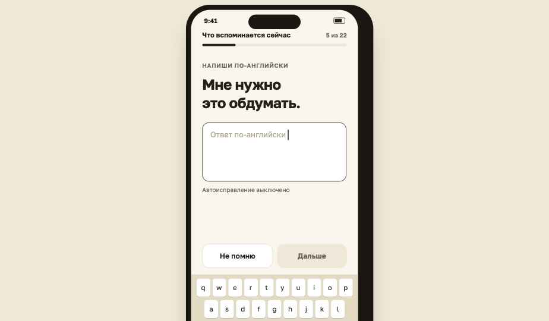
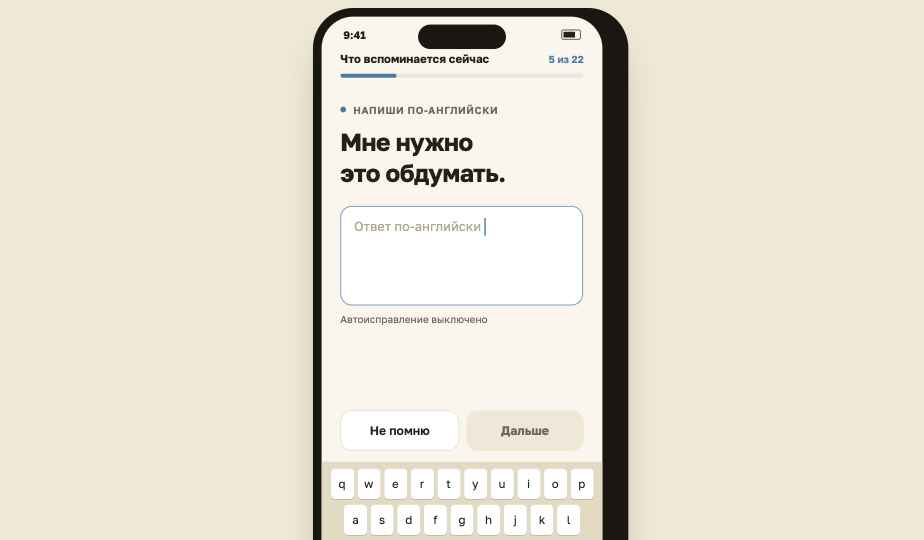
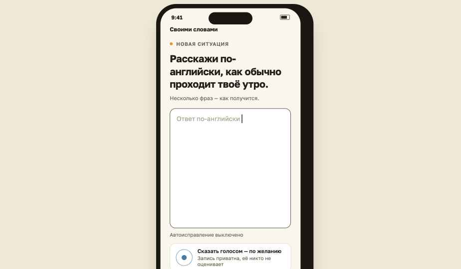
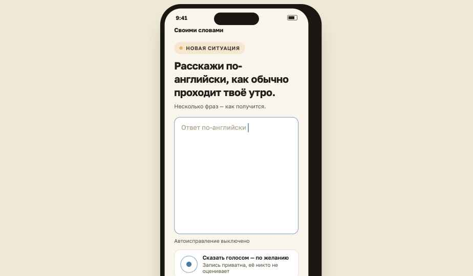
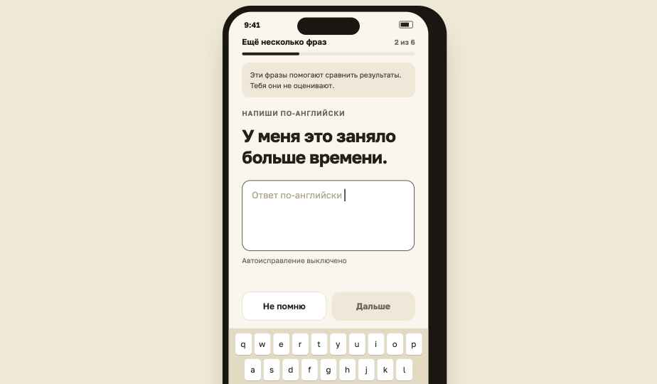
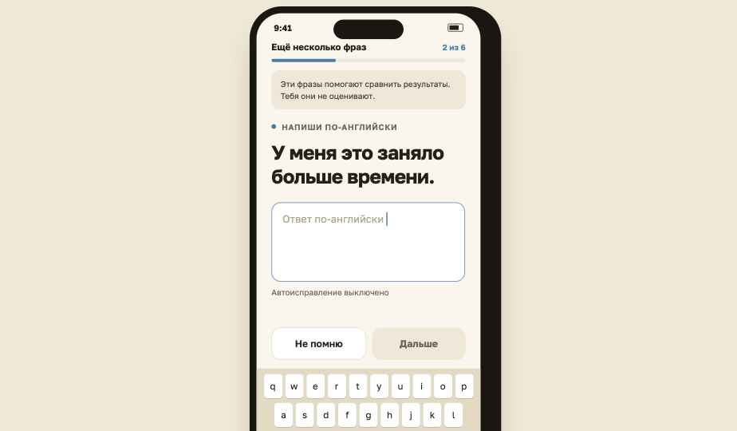

ieBatch B · завершение проверки — пять default-экранов
S9 (22 фразы) · S10 (своими словами) · S11 (6 фраз сравнения) · S12 (закрытие) · S13 (результаты). Визуальный язык — замороженный Batch A + vitality-коррекция: оценочный акцент — приглушённый синий #4A7BA6 (ориентация/фокус, не оценка), терракота = первичное действие (S10 «Отправить», S12, S13). Цвета успеха за ответы нет. Batch A не изменён. Сравнение до/после — внизу борда.
9:41
Что вспоминается сейчас5 из 22
НАПИШИ ПО-АНГЛИЙСКИ
Мне нужно это обдумать.
Ответ по-английски
Автоисправление выключено
qwertyuiop
asdfghjkl
⇧zxcvbnm⌫
123spacereturn
S9 · 22 фразы — механика S7; синий = режим среза (прогресс, метка, фокус поля), фраза — чернила; ни слова о происхождении фраз
9:41
Своими словами
НОВАЯ СИТУАЦИЯ
Расскажи по-английски, как обычно проходит твоё утро.
Несколько фраз — как получится.
Ответ по-английски
Автоисправление выключено
Сказать голосом — по желанию
Запись приватна, её никто не оценивает
S10 · свободная продукция: латунная метка ситуации, терракотовое «Отправить» = первичное действие (не успех); без опор и примеров; голос не гейтит
9:41
Ещё несколько фраз2 из 6
Эти фразы помогают сравнить результаты. Тебя они не оценивают.
НАПИШИ ПО-АНГЛИЙСКИ
У меня это заняло больше времени.
Ответ по-английски
Автоисправление выключено
qwertyuiop
asdfghjkl
⇧zxcvbnm⌫
123spacereturn
S11 · 6 фраз сравнения — та же механика; нейтральная плашка вместо research-слов; поле в фокусе, клавиатура как в S7/S9
9:41
Все части пройдены
Осталось закрыть проверку — одно действие, один раз.
✓Знакомые фразы22 из 22
✓Своими словамиготово
✓Фразы для сравнения6 из 6
Ответы уже сохранены — изменить их нельзя.
Закрытие подводит итог всей проверки и не меняет ответы.
S12 · явное однократное закрытие: список частей — факт состояния, без баллов; терракота возвращается — это действие пути, не оценка
9:41
✓
Результаты готовы
Проверка завершена. Всё написанное собрано в один файл результатов.
Ответы всех трёх частейвнутри
Время практикивнутри
Твои голосовые записитолько ссылки
Результаты хранятся на этом устройстве. Повторная отправка ничего в них не меняет.
К практике ›
S13 · read-only после закрытия: состав по-человечески, системный шэринг, повтор безопасен; без баллов и фанфар
ДО / ПОСЛЕ · VITALITY-КОРРЕКЦИЯ S9 · S10 · S11
S9 — синий акцент среза: прогресс · метка · фокус поля · позиция

до

после
S10 — латунная метка ситуации, терракотовое первичное действие

до

после
S11 — тот же синий режим среза; плашка сравнения без изменений

до

после
S12/S13 проверены без правок: терракота = действие пути, мята = полнота частей, латунь = ось времени — согласуются со скорректированной последовательностью S9–S11. Цвет нигде не сообщает верно/неверно.